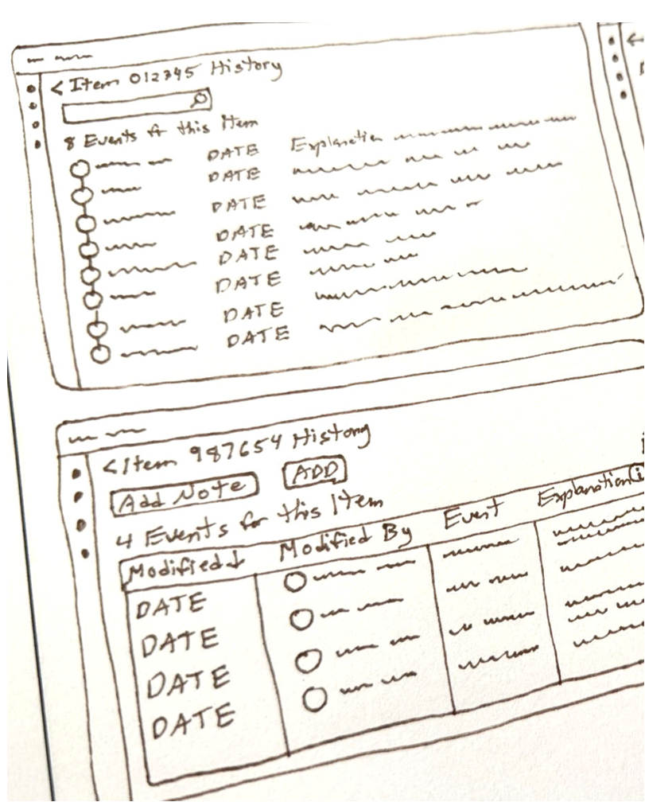
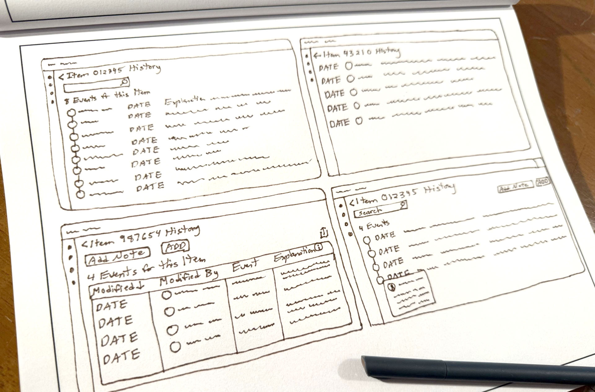
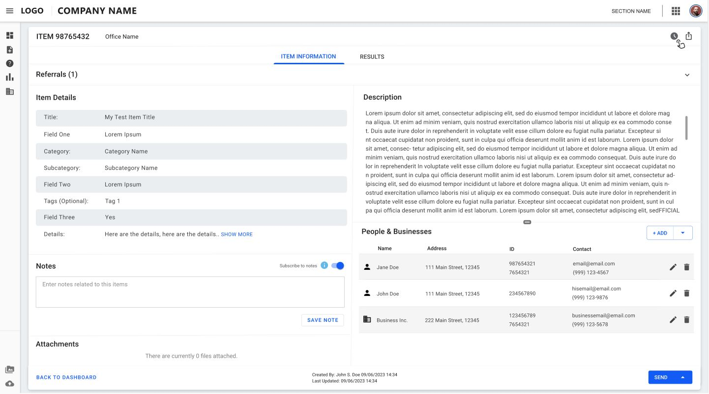
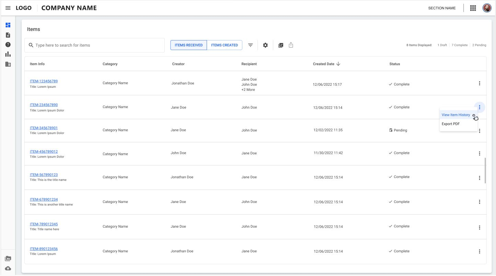
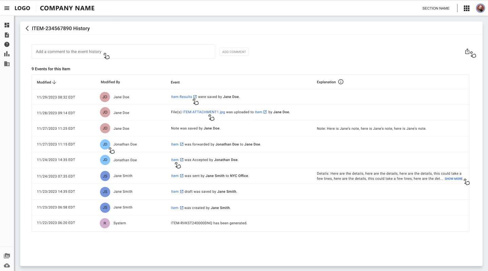

Part of a suite of enterprise applications, this application handles incoming cases which needed to be researched, addressed, and eventually closed. Each case item can be assigned and reassigned as necessary, with involved personnel acting upon each case item.
*Note the actual case study has been modified to reflect project privacy
October 2024 – January 2025
Supervisors needed to track the actions of their personnel for the case items that came into their department. They needed to monitor patterns on how specific employees were handling items. They also had to audit these actions and quickly create reports. The reports were created manually by the supervisors, which was taking too much time.
To enable supervisors to efficiently track and audit the history of each case item and monitor how their staff is handling the items. Supervisors also needed to be able to quickly create reports of these logs to send to their supervisors.
- User research
- Business requirements
- Wireframing
- Prototype development
- User testing
- To incorporate the ability to see the complete history log for any given item
- Include key data about each item event, such as date of event, event description, and person who performed each action on the item
- To seamlessly incorporate this new feature into the existing application, without changing the original user experience
- To allow access to this new functionality from anywhere within the application
- Nice to have: allow sorting by event date
I met with users to discover their current needs and pain points. I took notes and sketched layout ideas and user flow diagrams. Wireframes and mockups were shared and tested with users at multiple intervals.
Research was performed online to study established patterns for history logs in other applications. Sketches were made to potentially apply these ideas to our application.
I thought through the logical order of the user flow. This helped determine the necessary screens to access the history log, as well as various interactions with the log content, such as exporting, printing, and navigating.
I sketched out various layout ideas, making sure the business needs were met, and that the layouts would be easy to understand and user-friendly.

Lo-Fi wireframes were created and presented among the team members and tested with the users.

Based upon feedback, key screen mockups were created in mid-fidelity, then iterated upon after additional rounds of feedback to develop a working prototype to present to users and inform developers.



1. Uses design system, which follows 508A accessibility guidelines for all components and is consistent with the rest of the platform. Design is adaptable with screen readers and colors have been tested for adequate contrast.
2. Includes clean layout, plain language, and clear headings to aid user in understanding of the new feature.
3. Uses column labels and optional help to make the new screen understandable.
Supervisors were now better able to track and monitor the activities within their busy office and make sure action items were not getting “stuck” in the process. Supervisors were now able to easily create regular reports in 1/5 of the time it previously took.
I learned that repeatedly testing with users will guide the designs, both in understanding user preferences and the reasons for those preferences. Studying their feedback can spark new ideas which can further optimize the designs.
Back to Home
To Top of Page